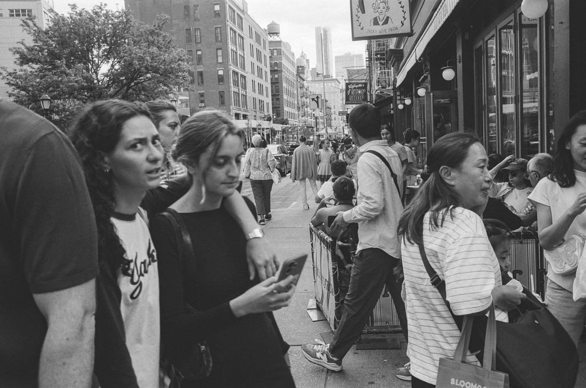
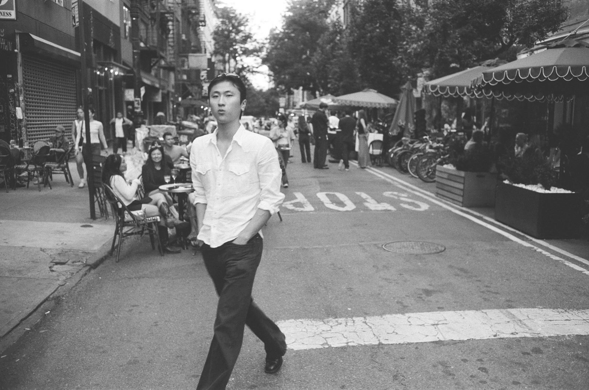
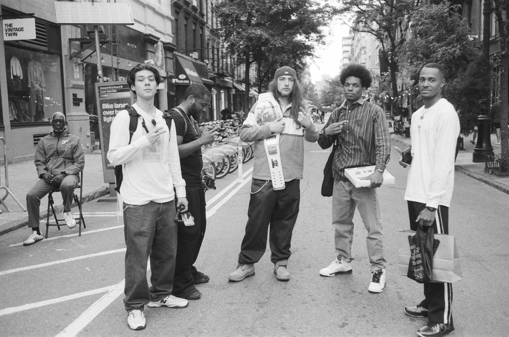

July 17, 2026
Did You Just Take My Picture?
As a street photographer, the question I get asked most is some version of: do people ever get upset when they notice you taking their picture? Aren't you worried about a confrontation? And underneath it is a bigger question — how should I behave out on the street with a camera? Should I be obvious? Should I ask permission? Should I try to avoid detection?
There are a lot of ways to do street photography, and I'm not here to tell anyone the right or wrong way. All I can talk about is my own experience, how it's evolved, and how I think about the practice — practically, ethically, and in terms of what makes the best possible photographs.

The one rule
I don't really believe in rules — this is okay, that's not okay — with one exception, and it's a rule I give myself: don't photograph people in highly vulnerable situations.
So I don't intentionally photograph people who are unhoused. Sometimes someone appears in the background of a frame, or I don't realize until later — and in that case, I don't do anything with the photograph. Another example: there's a large population of West African vendors on Canal Street. I would never photograph them. That's a population ICE has targeted, and my photographs are not going to be a thing that endangers anyone.
Beyond that, that's really my only rule. Some photographers won't photograph kids. I photograph kids — especially kids with their parents. I'm not going to stroll into a playground with a camera, and I'm never going to get close to a kid or in a kid's face. But I photograph families for sure. Kids on the shoulders of their dads in Times Square, for sure. Look through the history of street photography: it's not all adults in the pictures. Kids are part of the city.
Shooting from the hip
In terms of how I behave on the street, I've gone through many iterations, and honestly it tracks my confidence level. When I was starting out, the streets of New York were intimidating, and the fear that a photo might lead to a confrontation pushed me toward subtlety — sometimes toward hiding the fact that I was taking a photo at all.
A lot of new street photographers "shoot from the hip": camera never comes up to the eye, wide aperture, zone focused, frames made without anyone knowing. I've done it, and I still do it occasionally — sometimes a lower perspective treats the photo better, and sometimes there's something happening that I don't want to interrupt. Moving a camera up to your face is an alarm for everyone around you that a photo is about to happen, and sometimes you don't want that alarm to go off. You don't want to break the energy of the scene.
Why I bring the camera to my eye anyway
But ninety percent of the time, I deliberately bring the camera to my eye, look through the viewfinder right at the person I'm photographing, and hold it there — waiting for them to look back. Because here's the beautiful thing: if someone notices you, they look at the camera. They're looking right down the lens, into your eye. They're making eye contact with your photograph. And eye contact in a photograph is extremely powerful — far more powerful, most of the time, than a subject who never knew and is looking off at whatever they were doing. That eye contact is a gateway into your audience's mind. The camera becomes a portal between viewer and subject.
So I shoot this way for two reasons. One: better photographs. Two: ethically, I want people to know I'm taking their picture. I don't want it to be a secret.

"What did you see?"
Working openly means conversations. Sometimes it's "did you just take my picture?" or "hey, what are you doing with that camera?" Almost never are those questions angry. They're curious. What they're really asking is: I'm genuinely confused about why you took my picture, because I'm not doing anything interesting. I'm walking from point A to point B. I'm on my way to work, on my way to the subway. What did you see that I don't know about?

I love getting that question, because I get to answer it honestly. "You look great today." "The light coming down this street hit you in this interesting way as you passed through it." As a photographer, you should be able to answer that question. If you can't, you might not be thinking enough about the images you're making — why you like certain light, certain subjects, certain streets. The question forces you to interrogate your own choices. It's a gift.
People on a New York City street are in public. There's no illusion of privacy; they're fair game to be photographed. But you're in public too. If they don't get privacy, neither do you. You get to photograph them — and they get to ask you why. I think that's a big difference between an amateur and a professional: the professional can give an answer. They can describe what just happened in front of them that made them want to make a photograph. That's a valuable thing to be thinking about as you move through the streets.
Want to work on this in person — camera up, on the street, with a guide? Book a photo tour →